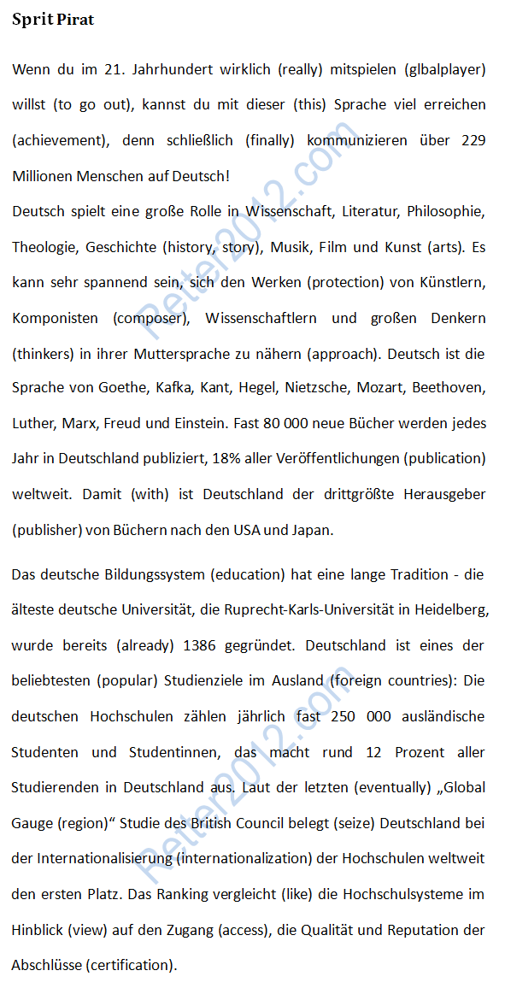

返回主页
挑战原文：德语探险

Einfach Deutsch & Basic English
德语常用缩写
如果你喜欢别的，就到网上找点。掌握德语，背诵500-800字足以。
德英电子辞典（LingoPad）辅助阅读
《德国简史教程》
《德语国家国情》
《瑞士简史教程》
《德语简史》
日耳曼人大迁徙（蛮族入侵）
海上学府（Semester At Sea）
入选Zukunftskonzepte的大学一般被称作精英大学（Eliteuniversitat），在2006年、2007年、2012年进行过评选。精英大学的称号不是终身制的，大致上5年即重新评选一次，2012年-2017年间有11所大学拥有此头衔。
所有曾经入选过的精英大学：
慕尼黑大学：2006年入选（首轮第一批入选）
慕尼黑工业大学：2006年入选（首轮第一批入选）
海德堡大学：2007年入选（首轮第二批入选）
卡尔斯鲁厄理工学院：2006年入选（首轮第一批入选），2012年（第二轮）被淘汰。
亚琛工业大学：2007年入选（首轮第二批入选）
柏林自由大学：2007年入选（首轮第二批入选）
弗莱堡大学：2007年入选（首轮第二批入选），2012年（第二轮）被淘汰。
哥廷根大学：2007年入选（首轮第二批入选），2012年（第二轮）被淘汰。
康斯坦茨大学：2007年入选（首轮第二批入选）
柏林洪堡大学: 2012年入选（第二轮入选）
图宾根大学: 2012年入选（第二轮入选）
德累斯顿工业大学: 2012年入选（第二轮入选）
不来梅大学: 2012年入选（第二轮入选）
科隆大学：2012年入选（第二轮入选）
version:1.0; jobnet@188.com © retter2012.com